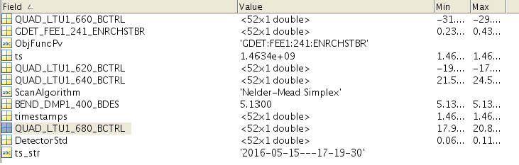
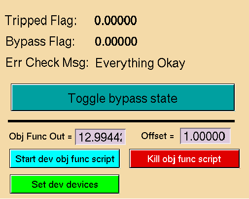

This section details information about the most important files and classes used int the project
OcelotInterface.OcelotInterface
def scanMethodSelect(self):
"""
Sets scanner method from options panel combo box selection. Creates Objective Function object
This method executes from the startScan() method, when the UI "Start Scan" button is pressed.
Returns:
Selected scanner object
These objects are contrained in the scannerThreads.py file
"""
self.indexOpt = self.ui.select_optimizer.currentIndex()
self.name_opt = self.ui.select_optimizer.currentText()
self.objective_func = obj.SLACTarget(eid=self.objective_func_pv)
self.objective_func.mi = self.mi
#simplex Method
if self.indexOpt == 0:
self.minimizer = Simplex()
self.ui.groupBox_2.setEnabled(False)
self.ui.groupBox_4.setEnabled(True)
#GP Method
if self.indexOpt == 1:
self.minimizer = GaussProcess()
self.ui.groupBox_2.setEnabled(True)
self.ui.groupBox_4.setEnabled(False)
self.use_normscale = False
# Conjugate Gradient
if self.indexOpt == 2:
self.name_current = self.name3
# Powells Method
if self.indexOpt == 3:
self.name_current = self.name4
print "Selected Algorithm =", self.name_opt
return self.minimizer
The scanMethodSelect() method returns a threaded scanner object from scannerThreads.py
OcelotInterface.OcelotInterface.OcelotInterfaceWindow.scanMethodSelect
This file is used a wrapper to translate between reqeusts by the optimizer and the control system. It also serves to hold the scan data, as well as perform normalization and unformalization for the optimzer class.
OcelotInterface.mint.lcls_interface
Getters and Setters
Basic getter and setter methods using epics: The SASE or objective function measurment is done in a separate method for averageing over the BSA waveform.
Getter function
def get_value(self, device_name):
"""
Getter function for lcls.
Args:
device_name (str): String of the pv name used in caget
Returns:
Data from caget, variable data type depending on PV
"""
return epics.caget(str(device_name))
Setter function
def set_value(self, device_name, val):
"""
Setter function for lcls.
Args:
device_name (str): String of the pv name used in caput
val (variable): Value to caput to device, variable data type depending on PV
"""
epics.caput(device_name, val)
#mu = mu
#sig = math.sqrt(abs(mu))
#y = (float(x)-mu)/(sig)
Saving Data
Durring a scan the LCLSMachineInterface is used to save data for evey step in the scan. The function get_sase() is used to trigger a save event. Everytime an optimizer object calls this funciton, data is saved for the setpoint of every devices and the objective funciton. OcelotInterface.mint.lcls_interface.get_sase
When a scan is finished, the data is written to a file in the matlab data directory using a module “matlog.py” imported from the python toolbox.
Normalization
In order to caput optimizer output back to the control system, a similar unnormalize funcion is used.
OcelotInterface.scannerThreads
Ocelot Scanner
GP Scanner
OcelotInterface.resetpanel.resetpanel | This version subclasses resetpanel and adds in the active checkbox column OcelotInterface.resetpanel.resetpanelbox
The program needs to be able to pull information from external files in order to work correctly, based on the input for parameter files and settings in the options panel.
The Ocelot scipy based scanners use the normalization parameters located in ./parameters/normParams
These parameters are auto generated from the historical ranges of the devices. Format: PVNAME,MEAN,STD
Load funciton OcelotInterface.scannerThreads.OcelotScanner.loadNormFile
Hyperparameters
data[{“3”: {“PV1”: [AVE,STD], “PV2”: [AVE,STD], “PVN”: [AVE,STD] }{“4”: {“PV1”: [AVE,STD], “PV2”: [AVE,STD], “PVN”: [AVE,STD] }......{“16”: {“PV1”: [AVE,STD], “PV2”: [AVE,STD], “PVN”: [AVE,STD] }]
Understanding how these hyperparameters affct the optimizer is a bit tricky. What we have found is that typically the length scales determine the step size that GP will take when choosing a new point. The amplitude coefficent seems to determine how much the scanner will explore versus stay on a local maximum. The noise parameter determines how much of the obj func measured is accounted for by random fluctuation and noise from the beam. We have usually letf this constant, using the log of the GDET standrard deviation.
Matlab Seed File
Load funciton OcelotInterface.scannerThreads.GpScanner.loadSeedData
Example of data from a Ocelot Scan. This data is formated into a matrix and feed into the GP
The mean and standard deviation used in the IO files above are generated in a script named energySeparation.py. More detailed informatino on this is located in the readme file within the module. The module is located in the python toolbox /usr/local/lcls/tools/python/toolbox
This describes the process of running ocelot in development mode, in order to test new algorithms or debugging. To do this 4 dev matlab PVs are used as dummy devices, and te GUI reads in a linear objective function is place of the GDET.
def main():
"""
Function to start up the main program.
Slecting a PV parameter set:
If launched from the command line will take an argument with the filename of a parameter file.
If no argv[1] is provided, the default list in ./parameters/lclsparams is used.
Development mode:
If devmode == False - GUI defaults to normal parameter list, defaults to nelder mead simplex
if devmode == True - GUI uses 4 development matlab PVs and loaded settings in the method "devmode()"
"""
pvs = 'parameters/lclsparams'#default filename
#make pyqt threadsafe
QtCore.QCoreApplication.setAttribute(QtCore.Qt.AA_X11InitThreads)
#create the application
app = QApplication(sys.argv)
window = OcelotInterfaceWindow()
#timer for end of scan, need to look at new threading methods using QT for Optimizer thread.
timerFin = pg.QtCore.QTimer()
timerFin.timeout.connect(window.scanFinished)
timerFin.start(300)
#setup development mode if devmode==True
if window.args.s:
devmode = True
else:
devmode = False
if devmode:
pvs =[]
for dev in window.mi.pvs[0:2]:
pvs.append(str(dev))
window.devmode()
else:
pass
#window.simDisable()
#Build the PV list from dev PVs or selected source
window.ui.widget.getPvList(pvs)
#set checkbot status
if not devmode:
window.ui.widget.uncheckBoxes()
#show app
window.setWindowIcon(QtGui.QIcon('ocelot.png'))
window.show()
#Build documentaiton if source files have changed
os.system("cd ./docs && xterm -T 'Ocelot Doc Builder' -e 'bash checkDocBuild.sh' &")
sys.exit(app.exec_())
The main function contains a boolean ‘devmode’ to turn the development mode on and off. If devmode is true, the GUI loads up the dev device PVs and reads in the and objective function from the PV “SIOC:SYS0:ML00:CALCOUT993”. A script to start this output can be started from the blue button on the edm dev panel.
def devmode(self):
"""
Used to setup a development mode for quick testing.
This method contains settings for a dev mode on GUI startup.
Uses the following PVs as dev devices:
SIOC:SYS0:ML00:CALCOUT997
SIOC:SYS0:ML00:CALCOUT998
SIOC:SYS0:ML00:CALCOUT999
SIOC:SYS0:ML00:CALCOUT000
Uses the following PV as an objective function:
SIOC:SYS0:ML00:CALCOUT993
Best used with the epics dev control panel fromt he GUIs options panel.
"""
#select GP alg for testing
self.ui.select_optimizer.setCurrentIndex(0)
#set dev objective function
self.objective_func_pv = "SIOC:SYS0:ML00:CALCOUT993"
#faster timing
self.trim_delay = 0.2 #fast trim time
self.data_delay = 0.2 #fast delay time
#GP settings
self.GP_hyp_file = "parameters/hype3.npy"
self.SeedScanBool = True
#set the save path to tmp instead of the lcls matlab data directory
self.save_path = '/tmp/'
self.ui.widget.devices = []
self.pvs =[]
for dev in self.mi.pvs[0:2]:
self.pvs.append(str(dev))
self.ui.widget.addPv(str(self.pvs[0]))
self.ui.widget.addPv(self.pvs[1])
self.devices = []
self.devices = self.ui.widget.get_devices(self.pvs[0:2])
self.objective_func_pv = self.mi.pvs[2]
self.scanMethodSelect()
#==============================================================#
# -------------- Start code for scan options UI -------------- #
#==============================================================#
This is the function that is executed when you choose dev mode. You can change options here depending on what you are testing.
This is the edm development panel that controls the y funciton read in durring dev mode.
{kind=link}
{kind=link}